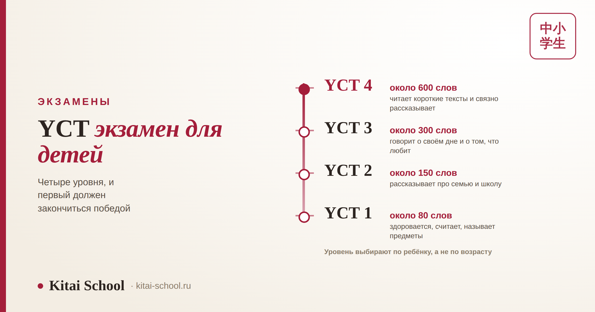
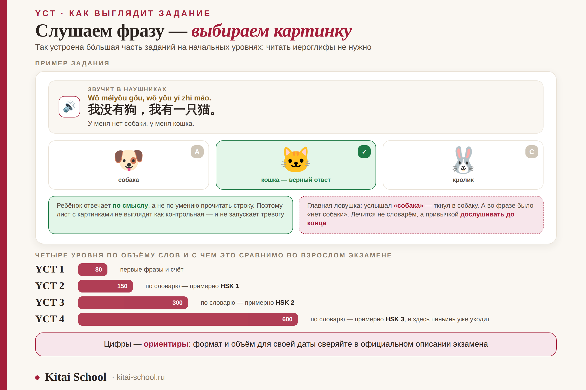
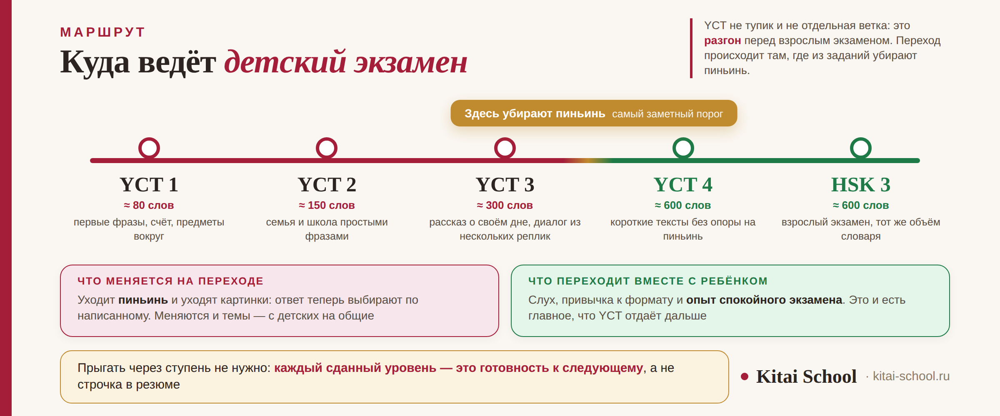

Экзамены HSK
YCT: экзамен по китайскому для детей — как выбрать уровень и сдать с первого раза


Про экзамен YCT родители обычно спрашивают одно и то же: «а не рано?» и «а зачем он вообще нужен, если ребёнку в школу его не понесёшь?». Оба вопроса правильные, и ответы на них не такие, как пишут в рекламных описаниях. Разберём честно: что это за экзамен, как выбрать уровень так, чтобы первый опыт закончился радостью, а не слезами, и в чём его настоящая польза.
YCT — экзамен по китайскому для школьников, четыре уровня вместо шести. Темы детские, задания с картинками, тест короткий. На первых уровнях над иероглифами стоит пиньинь, так что читать знаки необязательно. Уровень выбирают не по возрасту, а по правилу первой победы: берите тот, который ребёнок сдаст уверенно. И главное: ценность YCT не в сертификате, а в том, что он превращает «мы учим китайский» в цель с датой.
Что такое YCT и чем он отличается от HSK
Полное название — Youth Chinese Test, по-китайски 中小学生汉语考试. Это тот же экзаменационный «дом», что и HSK, но собранный под школьника.
| YCT | HSK | |
|---|---|---|
| Для кого | школьники, изучающие китайский | подростки и взрослые |
| Уровней | четыре | шесть |
| Темы заданий | семья, школа, животные, еда, игры, цвета | учёба, работа, город, быт, общие вопросы |
| Как выглядят задания | много картинок: выбрать нужную, соотнести с фразой | текстовые варианты ответа |
| Длительность | короткий: рассчитан на детское внимание | длиннее, растёт с уровнем |
| Зачем сдают | мотивация и понятная цель | учёба, работа, документы |
Важно не путать «детский» с «лёгким». YCT — не упрощённый HSK, а экзамен с другим содержанием: слова там те, которыми ребёнок реально пользуется, а не те, что пригодятся студенту. Поэтому взрослому, который учит язык для работы, YCT не нужен, даже если по объёму слов он совпадает с младшим HSK.
Четыре уровня: что ребёнок умеет на каждом
Уровни идут по нарастающей и примерно повторяют шаг первых трёх ступеней HSK по объёму словаря.
| Уровень | Слов, ориентировочно | Что ребёнок может |
|---|---|---|
| YCT 1 | около 80 | здоровается, называет себя, считает, показывает предметы вокруг |
| YCT 2 | около 150 | рассказывает про семью и школу простыми фразами, понимает короткие вопросы |
| YCT 3 | около 300 | говорит о своём дне, о том, что любит и что умеет, понимает диалог из нескольких реплик |
| YCT 4 | около 600 | читает короткие тексты и связно рассказывает о привычных вещах |
Соотношение с взрослым экзаменом удобно держать в голове так: по словарю YCT 2 примерно равен HSK 1, YCT 3 — HSK 2, а YCT 4 — HSK 3. Это ориентир по объёму лексики, а не официальное приравнивание: содержание всё равно разное. И отдельно: цифры по уровням и формат заданий для вашей даты сверяйте в официальном описании экзамена — требования пересматриваются.
Иероглифы: почему на первых уровнях их можно не читать
Это то, что снимает главный родительский страх. На начальных ступенях над иероглифами в заданиях напечатан пиньинь — латинская запись чтения. Ребёнок, который знает звучание слова, но не помнит знак, всё равно поймёт, что написано.
Устроено это ровно так же, как на младших уровнях взрослого экзамена: на HSK 1 и HSK 2 пиньинь тоже есть, а на HSK 3 его уже нет. Момент, когда подпорка убирается, — самый заметный порог в изучении китайского, и к нему готовятся заранее.
Что это значит на практике: заучивать иероглифы к первому экзамену не нужно. Нужно, чтобы ребёнок много слушал и узнавал слова на слух. Знаки подтянутся сами — сначала как узнавание знакомых слов в тексте, потом как письмо. Именно в таком порядке, а не наоборот: если начать с прописей, язык быстро становится «уроками», а не языком. Подробнее про порядок освоения — в статье про этапы изучения китайского.

Из личного опыта
Мама девятилетней ученицы очень хотела, чтобы дочка сдавала сразу третий уровень: «она у нас способная, что мы будем размениваться». Мы прогнали дома задания третьего уровня — девочка справилась, но с напряжением, к концу устала и один раз сказала: «а можно я больше не буду».
Сдавали второй. Она вышла с экзамена сияющая, с ощущением, что это было легко и весело. Через полгода спокойно сдала третий — и уже сама спросила, когда следующий.
Я с тех пор говорю родителям одну вещь: первый экзамен решает не уровень, а отношение. Уровень догонится за полгода, а испорченное впечатление — за годы.
Как выбрать уровень: правило первой победы
Самая частая ошибка — выбирать уровень «на вырост», по возрасту или по количеству лет занятий. Правильный ориентир один: первый экзамен должен закончиться победой.
| Ситуация | Что делать |
|---|---|
| Ребёнок прогоняет задания уровня спокойно и с запасом | это ваш уровень, идите |
| Справляется, но устаёт и нервничает | берите предыдущий уровень |
| Понимает на слух, но теряется в бланке | уровень ни при чём: нужны один-два пробных прогона |
| «Мы за год прошли учебник, значит, готовы» | учебник и экзамен — разные вещи, проверяйте заданиями |
Проверка занимает один вечер: садитесь вместе, включаете таймер и прогоняете задания выбранного уровня как настоящий экзамен. Если получилось без слёз и без подсказок — можно записываться. Если на грани, берите ступень ниже: ничего не потеряете, а ребёнок выйдет с экзамена с ощущением «я могу». Как устроен пробный прогон, разобрано на примере взрослого экзамена в статье про пробный тест HSK 1 — механика та же.
Задания с картинками: почему это работает
Картинок в YCT много, и это не украшение. У них две вполне рабочие функции.
| Функция | Что происходит с ребёнком |
|---|---|
| Снимают барьер письменности | ответ выбирается по смыслу, а не по умению прочитать длинную строку |
| Держат внимание | лист с картинками не выглядит как контрольная — а значит, не запускает тревогу |
| Но требуют внимательности | картинки часто похожи, и ошибка бывает не в языке, а в спешке |
Отсюда неочевидный совет: тренируйте не только слова, но и привычку дослушивать до конца. Дети часто выбирают картинку по первому услышанному слову — услышал «собака», ткнул в собаку, а во фразе было «у меня нет собаки». Это самая частая потеря баллов на начальных уровнях, и лечится она не словарём, а десятком тренировочных заданий.
Что YCT реально даёт ребёнку и чего не даёт
Здесь честно, потому что от этого зависит, стоит ли вообще затевать.
| Даёт | Не даёт |
|---|---|
| Цель с датой — расплывчатое «учим китайский» превращается в понятный финиш | Формального преимущества при поступлении: это не вступительный экзамен |
| Ощущение победы — ребёнок видит, что усилия дали измеримый результат | Замены систематических занятий: сертификат не учит |
| Структуру занятиям — появляется понятный список того, что нужно освоить | Гарантии, что ребёнок полюбит язык, если дома давят |
| Точку отсчёта для родителя — видно, что изменилось за год | Международного статуса уровня взрослого HSK |
И прямо: сертификат YCT в большинстве случаев никуда не подаётся. Его ценность — внутренняя, для ребёнка и для процесса. Если он нужен вам для конкретной программы, олимпиады или школы, требования уточняйте прямо у них: они бывают разными и меняются. А если цель — документ на будущее, ориентироваться стоит сразу на сертификат HSK.

Как готовиться: три вещи, которые работают
Подготовка к детскому экзамену устроена не так, как ко взрослому: главное здесь — не объём, а формат и настроение.
| Что делать | Почему это работает |
|---|---|
| Слушать больше, чем читать | аудирование — половина экзамена и вся основа языка в этом возрасте |
| Тренировать формат, а не только слова | дети теряют баллы на инструкции и бланке чаще, чем на незнакомых словах |
| Сделать два-три полных прогона по таймеру | снимает главный стресс: на настоящем экзамене всё уже знакомо |
| Держать занятия короткими | двадцать минут каждый день работают лучше, чем полтора часа по субботам |
Хорошая новость про лексику: слова YCT — это ровно то, что и так проходят на занятиях с детьми. Числа, цвета, животные, еда, семья. Отдельные списки почти не нужны — нужен повтор в другом виде: счёт от нуля до десяти, звуки животных, песни и мультфильмы, про которые есть отдельный разбор в статье про китайский для малышей.
Чего родителям делать не надо
Короткий список, собранный из того, что чаще всего портит первый экзамен.
| Не надо | Что вместо этого |
|---|---|
| Брать уровень «на вырост» | брать тот, который сдаётся уверенно |
| Устраивать марафон за неделю до даты | снизить нагрузку и сделать один спокойный прогон |
| Обсуждать баллы в день экзамена | похвалить за то, что дошёл и сделал, а разбор отложить |
| Сравнивать с другими детьми | сравнивать ребёнка только с ним самим полгода назад |
И последнее, самое важное. Экзамен для ребёнка — это событие, а не проверка. Как вы к нему отнесётесь, так к нему отнесётся и он. Если для вас это «наконец-то посмотрим, чему научили», ребёнок услышит именно это. Если «идём попробовать, интересно же» — услышит другое. Разница в результате будет заметнее, чем от лишних тридцати выученных слов.
Частые вопросы (FAQ)
Что такое YCT и чем он отличается от HSK?
YCT — экзамен по китайскому для школьников, официально 中小学生汉语考试. От взрослого HSK он отличается не сложностью как таковой, а тем, из чего собран: темы взяты из детской жизни (семья, школа, животные, еда, игры), задания идут с картинками, а сам тест короткий, потому что рассчитан на детское внимание. Уровней четыре вместо шести, и охватывают они примерно тот же диапазон, что первые три уровня HSK.
С какого возраста можно сдавать YCT?
Формального нижнего порога нет: экзамен адресован школьникам, которые изучают китайский. На практике ориентируются не на возраст, а на две вещи. Первая — ребёнок должен уметь работать с бланком: слушать инструкцию, отмечать ответ, не терять строку. Вторая — он должен понимать на слух то, что будет звучать. Если хотя бы одно не выполняется, экзамен лучше отложить: ничего не потеряете, а первое впечатление сохраните.
Нужно ли ребёнку читать иероглифы, чтобы сдать YCT?
На первых уровнях — нет. В заданиях начальных ступеней над иероглифами напечатан пиньинь, и ребёнок может опираться на него. Иероглифы становятся обязательными выше, и это как раз тот момент, к которому имеет смысл готовиться заранее — не зубрёжкой, а постепенным узнаванием знакомых слов в тексте. Точный формат для своей даты сверяйте в официальном описании экзамена.
Как выбрать уровень YCT?
По правилу первой победы: берите тот уровень, который ребёнок сдаст уверенно, а не тот, который «примерно по силам». Первый экзамен решает, захочет ли ребёнок второй, поэтому запас важнее амбиции. Практическая проверка — прогнать дома задания уровня под таймер: если получается спокойно и без слёз, уровень ваш. Если на грани — берите предыдущий, ничего страшного не случится.
Зачем вообще сдавать YCT, если сертификат никуда не подаётся?
Главная ценность YCT не в бумаге, а в том, что он превращает расплывчатое «учим китайский» в измеримую цель с датой. У ребёнка появляется финиш, у занятий — структура, а у родителя — понятная точка отсчёта: было столько, стало столько. Если сертификат нужен для конкретной программы или школы, требования уточняйте прямо у неё — они разные.
Что делать, если ребёнок сдал хуже, чем ожидали?
Не обсуждать баллы в тот же день и точно не сравнивать с другими детьми. Через неделю вместе посмотреть, где именно потерялись ответы: почти всегда это не язык, а формат — не расслышал инструкцию, потерял строку, поторопился. Такие вещи чинятся одним-двумя пробными прогонами, а не удвоенной зубрёжкой слов.
Самое трудное в детском экзамене — попасть в уровень. Приходите на бесплатное пробное занятие: посмотрим, что ребёнок понимает на слух прямо сейчас, прогоним пару заданий и честно скажем, какой уровень YCT берётся уверенно, а какой пока рано.
Или напишите слово ПОБЕДА нашему менеджеру в Telegram — подберём формат занятий под возраст и уровень.
Дальше по теме: что подтверждает взрослый экзамен — сертификат HSK; первые ступени — HSK 1, HSK 2 и HSK 3; устная часть — HSKK; с чего начинать в дошкольном возрасте — китайский для малышей; тоны и звуки — корректировка произношения; трудно ли начинать — китайский с нуля; занятия для детей — детское направление и индивидуальные уроки. Все экзамены — в разделе «Экзамены HSK».
Источники
- Официальное описание экзамена YCT: уровни, состав частей и порядок проведения.
- Практика Kitai School — подготовка детей к YCT и наблюдения за первым экзаменом.
- Материалы блога Kitai School по уровням HSK: объёмы лексики и наличие пиньиня в заданиях.
Пусть первый экзамен будет праздником! 加油！